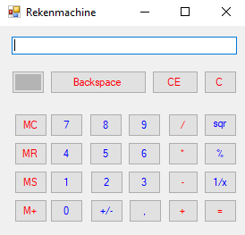
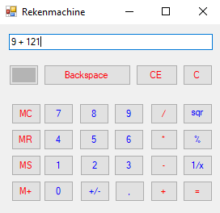
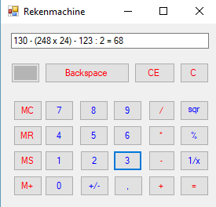

Calculator
Windows 7 and higher
A calculator. You can solve high tech massive math problem with this tool. All your math troubles will be gone! Modern electronic calculators vary: from cheap, give-away, credit-card-sized models to sturdy desktop models with built-in printers. They became popular in the mid-1970s (as integrated circuits made their size and cost small). By the end of that decade, calculator prices had reduced to a point where a basic calculator was affordable to most and they became common in schools. Computer operating systems as far back as early Unix have included interactive calculator programs such as dc and hoc, and calculator functions are included in almost all personal digital assistant (PDA) type devices (save a few dedicated address book and dictionary devices). In addition to general purpose calculators, there are those designed for specific markets. For example, there are scientific calculators which include trigonometric and statistical calculations. Some calculators even have the ability to do computer algebra. Graphing calculators can be used to graph functions defined on the real line, or higher-dimensional Euclidean space. As of 2016, basic calculators cost little, but the scientific and graphing models tend to cost more.
  